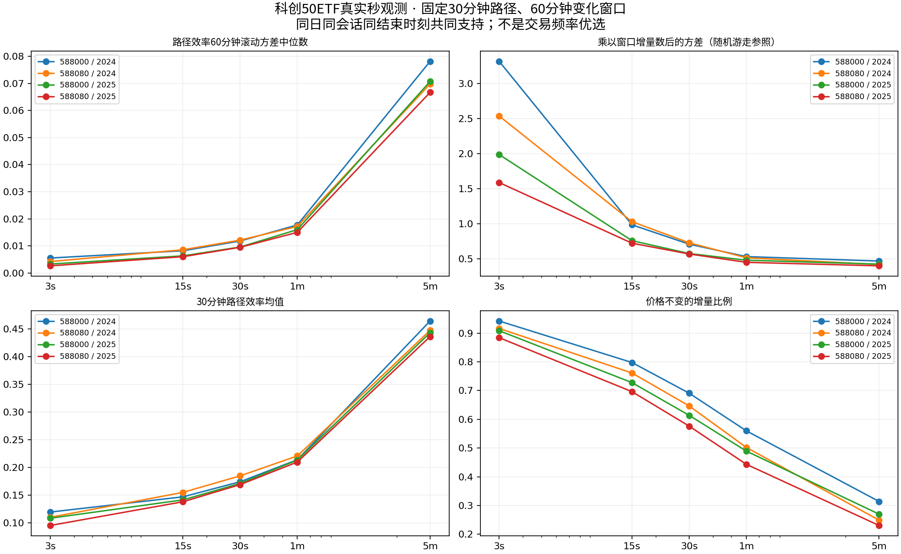
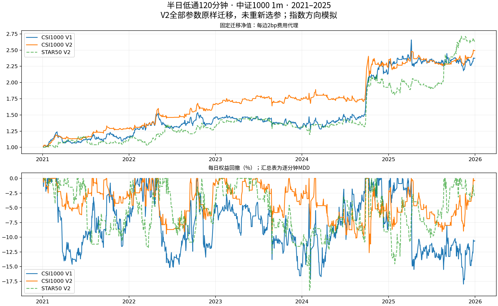

秒级数据来自588000/588080 ETF，不是科创50指数。固定物理回看时长并统一观察点；原始方差下降不能单独认定更平稳或更适合交易。

1m / 120分钟低通；2021—2025。下表cagr、mdd、win_rate为%，单笔mean_net_bp单位bp。手续费为每边代理，不是IM/MO实际盘口回测。
| label | fee_bps_per_side | trades | mean_net_bp | sharpe | cagr | mdd | win_rate |
|---|---|---|---|---|---|---|---|
| V1 | 0 | 419 | 28.2519 | 1.1169 | 23.9370 | 17.0037 | 45.1074 |
| V1 | 2 | 419 | 24.2479 | 0.9494 | 19.6979 | 18.8129 | 44.3914 |
| V1 | 4 | 419 | 20.2455 | 0.7833 | 15.6037 | 22.2021 | 43.4368 |
| V1 | 7 | 419 | 14.2449 | 0.5372 | 9.7236 | 29.2832 | 41.7661 |
| V2 | 0 | 233 | 47.6999 | 1.3424 | 23.2700 | 16.9269 | 50.6438 |
| V2 | 2 | 233 | 43.6907 | 1.2232 | 20.9090 | 16.9269 | 48.9270 |
| V2 | 4 | 233 | 39.6831 | 1.1044 | 18.5932 | 16.9269 | 46.3519 |
| V2 | 7 | 233 | 33.6748 | 0.9273 | 15.2024 | 16.9269 | 44.6352 |
